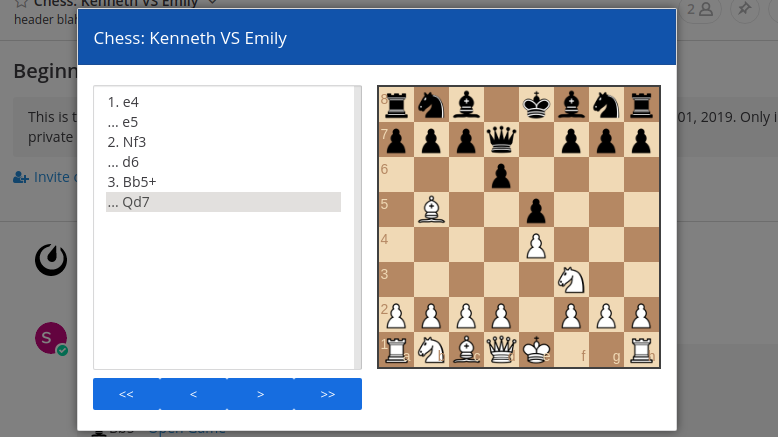

Personal Project - React Native Songbook
This React Native app is still in development, but the main parts are written and it should be released before the end of summer 2019. Using the abcjs and VexFlow libraries, the app will allow the user to import ABC notation music data and view it in the form of sheet music and guitar tab. It uses a local SQLite database which will be pre-loaded with songs from the Nottingham Dataset, a collection of free, open-source ABC music.
Technologies: JavaScript, React Native, Android, SQLite, React Native Navigation, VexFlow, ABCJS
Links:
GitHub project page |
Components |
Application logic |
Database
Personal Project - Mattermost Chess Plugin
This plugin for the Mattermost group messaging app allows users to play chess against each other. It uses the chessboard.js and chess.js libraries. In addition to this, I have made some other PRs to the Mattermost project which are linked below.
Technologies: JavaScript, React, Redux, chess.js, chessboard.js, CSS
Links:
GitHub project page |
mattermost-webapp PR |
mattermost-plugin-demo PR
Benson Medical Instruments - Benson Cloud Services

Benson Cloud Services is a web application for storage and analysis of occupational health testing data. I was a developer on this project for 8 months and worked on the frontend, backend and SSRS reporting module.
Technologies: C#, ASP.NET MVC, JavaScript (Dojo Toolkit), SQL (SSRS), SVN
Links:
YouTube video
Open Source - HospitalRun

HospitalRun is a hospital management application in JavaScript using Ember, CouchDB and Electron. I have made several contributions to this project.
Technologies: JavaScript, Node.js, CouchDB, Docker, Ember, Electron
Links:
Ember fix |
Docker config |
Reviewing a PR |
Deprecation fix |
Bugfix and test cases |
Docker and Node.js config fix |
Bug report +
Fix |
Troubleshooting +
Fix +
Fix |
Electron config
Personal Project - Grateful Dead Music Player

I created this project to help myself learn React. It uses a public API to allow users to search and play music from archive.org's collection of public-domain Grateful Dead recordings. It also uses MongoDB to allow users to make an account and save certain recordings as favorites.
Technologies: JavaScript, React, Express, Node, MongoDB, Passport
Links:
Main app component |
Data grid component |
Express routes |
App demo site
Certification - FreeCodeCamp Front End Development

The certification required me to complete of dozens of programming exercises.
Technologies: JavaScript, JQuery, Bootstrap, HTML, CSS, AJAX
Links:
Certification
Personal Project - Simon game

This "Simon" game in JavaScript was an exercise I did for the FreeCodeCamp Front End Developer course.
Technologies: JavaScript, CSS, Bootstrap, JQuery, HTML.
Links:
CodePen
Personal Project - Tic Tac Toe game

This "Tic Tac Toe" game in JavaScript was an exercise I did for the FreeCodeCamp Front End Developer course.
Technologies: JavaScript, CSS, Bootstrap, JQuery, HTML.
Links:
CodePen